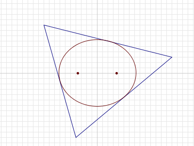

Ellipses inside triangles
Problem 385
For any triangle T in the plane, it can be shown that there is a unique ellipse with largest area that is completely inside T.

For a given n, consider triangles T such that:
- the vertices of T have integer coordinates with absolute value ≤ n, and
- the foci1 of the largest-area ellipse inside T are (√13,0) and (-√13,0).
Let A(n) be the sum of the areas of all such triangles.
For example, if n = 8, there are two such triangles. Their vertices are (-4,-3),(-4,3),(8,0) and (4,3),(4,-3),(-8,0), and the area of each triangle is 36. Thus A(8) = 36 + 36 = 72.
It can be verified that A(10) = 252, A(100) = 34632 and A(1000) = 3529008.
Find A(1 000 000 000).
1The foci (plural of focus) of an ellipse are two points A and B such that for every point P on the boundary of the ellipse, AP + PB is constant.